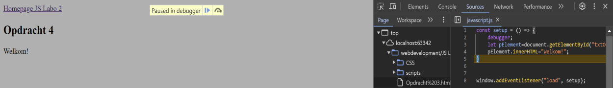
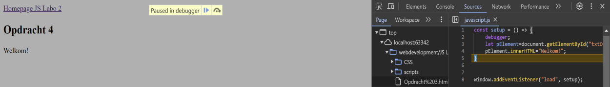

Hello world!
Doordat we de functie niet volledig laten afwerken, kunnen we stap voor stap zien wat er met de waarden gebeurt. Het is pas wanneer de regel met code uitgevoerd is, waar we de tekst aanpassen. Om te controleren of het niet op het einde van de functie was, had ik nog een extra regel code toegevoegd. Waaruit bleek dat het wel degelijk na het uitvoeren van de regel code was.
 
